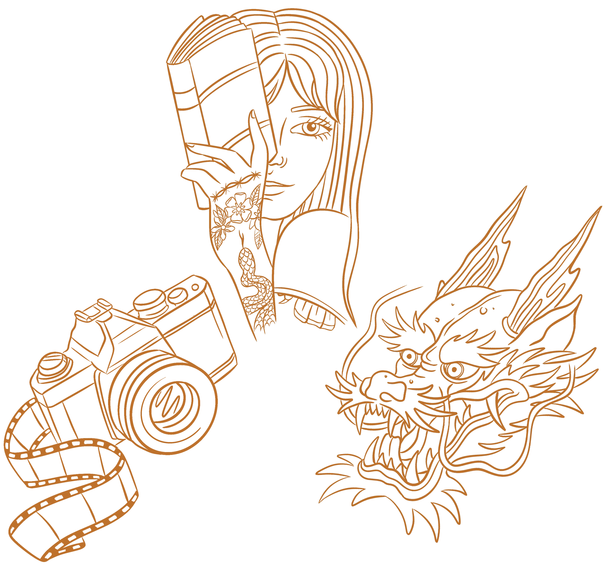

UX RESEARCH & DESIGN
FRONT END DEVELOPMENT
KAMILLA RIEDER
A LITTLE
ABOUT ME
CURIOUS MULTIFACETED RESPONSIBLE NERD
Born and raised in Denmark, I’ve spent most of my life committed to keeping my self-growth in motion.
This means I have acquired a wide array of experience throughout the years:
from living abroad, to working as a tattoo artist for five years,
then deciding to go back to school studying computer science and finally ending up in the world of multimedia design,
in which I have acquired a certain love for UX design and front end development.
It is safe to say I love learning.
While my career-path hasn't exactly been linear, I find that, thanks to the occasional re-routing, I've come out of it
with a wide skillset that can be applied in various aspects of my life.
I have a creative approach to resolving issues, I feel confident in jumping into new and unfamiliar territories,
and I'm well-versed in working closely together with coworkers and clients.
I definitely also have a certain knack for collecting hobbies, which include, but aren't limited to, reading books, photography,
crocheching, playing games (preferably the ones with dragons, monsters and magic), tending to my garden, and riding my motorbike in the summer months.
In short:
Hi. I'm Kamilla, and I'm a nerd.

PREVIOUS
PROJECTS
Second semester examination project, 2025.
Goal: To upgrade their website and strengthen Skateducates visual identity.
Solution: Drawing a parallel from the associations logo, we created a colorful and fun website that corresponds with Skateducates values.
Interactive storytelling group project for the Steno Museum, 2024
Goal: Develop a fun and interactive teaching tool for the museums target group.
Solution: We created a horizontal 'travel through time' experience, in which the user gets relevant information as they walk along the timeline.
Insectionidual project, 2024.
Goal: To become familiar with UX research metholodologies and develop an informational magazine about our own chosen subject.
FEEL FREE TO
CONTACT ME
CONTACTKAMILLARIEDER@GMAIL.COM